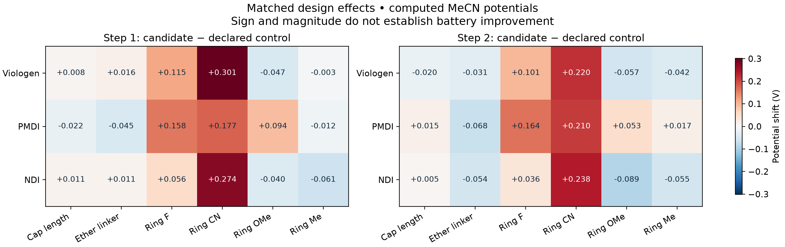

Workflow and reproduction · Discovery guide · Exact data and provenance · Design ledger · Matched effects
Define a design question → select matched structures and controls → review exact grafting routes → evaluate with the existing pipeline → compare admitted fields → define the next question.
879 distinct graphs after joining 837 enumerated designs with 75 current candidates and 1 external control. These sets overlap; no exact graph is counted twice. 26 declared comparisons (26 with both potential shifts).
Candidate evaluation snapshot: 2026-10-19T18:29:30.930801-05:00. This collection joins existing results and submits no calculations.
0 designs currently pass the prospective full-redox route gate. Missing candidate-specific route evidence stays explicit. Historical computations remain available. This is a separate dimension from redox computation and does not exclude base-required BQ/AQ designs on their HCl-reference energy.
Counts refer to unique exact grafts. Source-family labels are retained where a finer core assignment was not declared. These are coverage counts, not efficacy rankings.
| Core / source family | Unique designs | In enumeration | Selected candidates | External controls | Potential pairs | Route proceed |
|---|---|---|---|---|---|---|
| amine (p-type) | 2 | 0 | 2 | 0 | 2 | 0 |
| imide (n-type) | 9 | 0 | 9 | 0 | 7 | 0 |
| mono-imide (n-type) | 2 | 0 | 2 | 0 | 0 | 0 |
| ndi | 243 | 243 | 13 | 0 | 12 | 0 |
| phenothiazine (p-type, two-electron proposal) | 1 | 0 | 1 | 0 | 1 | 0 |
| pmdi | 135 | 135 | 12 | 0 | 12 | 0 |
| pyridine-multi-e | 9 | 0 | 9 | 0 | 2 | 0 |
| quinone (n-type) | 19 | 0 | 19 | 0 | 16 | 0 |
| viologen | 459 | 459 | 8 | 1 | 9 | 0 |
Δ = candidate minus control. Both endpoints must supply the same charge/electron event under the existing evaluator. Pending cells remain blank in CSV. A larger voltage shift, narrower wave spacing or lower mass is not an automatic selection benefit.

| Candidate | Control | Design axis | ΔE1 (V) | ΔE2 (V) | Δ spacing (V) | Δ mass (g/mol) | Field status |
|---|---|---|---|---|---|---|---|
| hyp_pmdi_cyclopropyl | design_pmdi_isopropyl | cap_topology | -0.012 | +0.018 | -0.031 | -2.016 | both potential shifts admitted |
| hyp_pmdi_2fluoroethyl | design_pmdi_ethyl | cap_fluorination | +0.026 | +0.039 | -0.013 | +17.990 | both potential shifts admitted |
| hyp_ndi_cyclopropyl | design_ndi_isopropyl | cap_topology | +0.006 | +0.022 | -0.016 | -2.016 | both potential shifts admitted |
| hyp_ndi_2fluoroethyl | design_ndi_ethyl | cap_fluorination | +0.038 | +0.022 | +0.016 | +17.990 | both potential shifts admitted |
| hyp_ptz_37dimethyl | exp_ptz_37dimethoxy | phenothiazine_substitution | +0.136 | +0.182 | +0.046 | -31.998 | both potential shifts admitted |
| hyp_ptz_37difluoro | exp_ptz_37dimethoxy | phenothiazine_substitution | +0.344 | +0.418 | +0.074 | -24.072 | both potential shifts admitted |
| search_viologen_991d299c38be | ethylviologen | cap_length | +0.008 | -0.020 | +0.028 | +14.027 | both potential shifts admitted |
| search_viologen_1c2d9d5208a4 | ethylviologen | ring_F | +0.115 | +0.101 | +0.014 | +17.990 | both potential shifts admitted |
| search_viologen_e46c2caea23e | ethylviologen | ring_CN | +0.301 | +0.220 | +0.081 | +25.010 | both potential shifts admitted |
| search_viologen_6ddf8e94b88f | ethylviologen | linker_C2 | +0.016 | -0.031 | +0.047 | +44.053 | both potential shifts admitted |
| search_pmdi_0fe159524740 | design_pmdi_ethyl | cap_length | -0.022 | +0.015 | -0.037 | +14.027 | both potential shifts admitted |
| search_pmdi_e5caac5870e1 | design_pmdi_ethyl | ring_F | +0.158 | +0.164 | -0.006 | +17.990 | both potential shifts admitted |
| search_pmdi_1864c2c74267 | design_pmdi_ethyl | ring_CN | +0.177 | +0.210 | -0.033 | +25.010 | both potential shifts admitted |
| search_pmdi_87840c94153a | design_pmdi_ethyl | linker_C2 | -0.045 | -0.068 | +0.023 | +44.053 | both potential shifts admitted |
| search_ndi_dd8125d2de65 | design_ndi_ethyl | cap_length | +0.011 | +0.005 | +0.006 | +14.027 | both potential shifts admitted |
| search_ndi_d2ac23774405 | design_ndi_ethyl | ring_F | +0.056 | +0.036 | +0.020 | +17.990 | both potential shifts admitted |
| search_ndi_da4d3784d1e2 | design_ndi_ethyl | ring_CN | +0.274 | +0.238 | +0.035 | +25.010 | both potential shifts admitted |
| search_ndi_da0ff84e889c | design_ndi_ethyl | linker_C2 | +0.011 | -0.054 | +0.065 | +44.053 | both potential shifts admitted |
| search_viologen_1ad45438b9e4 | ethylviologen | ring_OMe | -0.047 | -0.057 | +0.011 | +30.026 | both potential shifts admitted |
| search_viologen_e1199c9f4288 | ethylviologen | ring_Me | -0.003 | -0.042 | +0.039 | +14.027 | both potential shifts admitted |
| search_pmdi_6e49edb06a78 | design_pmdi_ethyl | ring_OMe | +0.094 | +0.053 | +0.041 | +30.026 | both potential shifts admitted |
| search_pmdi_6c8c35f7efd1 | design_pmdi_ethyl | ring_Me | -0.012 | +0.017 | -0.029 | +14.027 | both potential shifts admitted |
| search_ndi_9b5f09730b83 | design_ndi_ethyl | ring_OMe | -0.040 | -0.089 | +0.049 | +30.026 | both potential shifts admitted |
| search_ndi_573f69a7895b | design_ndi_ethyl | ring_Me | -0.061 | -0.055 | -0.006 | +14.027 | both potential shifts admitted |
| hyp_cata_ndi_ethyl | design_ndi_ethyl | core_topology | -0.220 | -0.312 | +0.092 | +0.000 | both potential shifts admitted |
| hyp_cata_adi_ethyl | hyp_cata_ndi_ethyl | core_topology | +0.173 | +0.179 | -0.006 | +50.060 | both potential shifts admitted |
Full core × anchor × cap × ring coverage preserves unselected cells. All symmetry-equivalent generation recipes remain in the design ledger.
Polymer counts are checked electronic structures for the same attachment fragment, in different polymer models. They do not transfer polymer energies into the capped-site property columns. Model limitations and route admission remain separate.
| Candidate | Family | Axis | E1 / E2 (V vs Fc) | Redox stage | Model validity | Route / label | Checked polymer structures | Next evaluation question |
|---|---|---|---|---|---|---|---|---|
| study_aryl_e2795f06393d | pyridine-multi-e | pending | pending / pending | partial_or_QC_pending | no_scoped_limitation | hold | 0 | resolve_remaining_redox_fields_and_QC |
| search_ndi_da0ff84e889c | ndi | linker_C2 | -0.753 / -1.473 | admitted_potential_pair | no_scoped_limitation | hold | 0 | review_matched_effect_and_polymer_environment |
| design_ndi_isopropyl | ndi | pending | -0.759 / -1.416 | admitted_potential_pair | no_scoped_limitation | hold | 0 | review_matched_effect_and_polymer_environment |
| exp_bq_oxy_trimethyl | quinone (n-type) | pending | -0.755 / -1.967 | admitted_potential_pair | no_scoped_limitation | Base required; retained for evaluation | 0 | review_matched_effect_and_polymer_environment |
| search_ndi_da4d3784d1e2 | ndi | ring_CN | -0.490 / -1.180 | admitted_potential_pair | no_scoped_limitation | hold | 0 | review_matched_effect_and_polymer_environment |
| d3_80eeoz | quinone (n-type) | pending | -0.984 / -2.006 | admitted_potential_pair | no_scoped_limitation | hold | 0 | review_matched_effect_and_polymer_environment |
| hyp_ndi_cyclopropyl | imide (n-type) | cap_topology | -0.754 / -1.394 | admitted_potential_pair | no_scoped_limitation | hold | 0 | review_matched_effect_and_polymer_environment |
| design_ndi_methyl | ndi | pending | -0.753 / -1.400 | admitted_potential_pair | no_scoped_limitation | hold | 0 | review_matched_effect_and_polymer_environment |
| study_aryl_9992bd3479e1 | pyridine-multi-e | pending | pending / pending | partial_or_QC_pending | no_scoped_limitation | hold | 0 | resolve_remaining_redox_fields_and_QC |
| d3_05ujsa | quinone (n-type) | pending | pending / pending | partial_or_QC_pending | no_scoped_limitation | hold | 0 | resolve_remaining_redox_fields_and_QC |
| search_ndi_dd8125d2de65 | ndi | cap_length | -0.753 / -1.413 | admitted_potential_pair | no_scoped_limitation | hold | 0 | review_matched_effect_and_polymer_environment |
| design_ndi_methoxyethyl | ndi | pending | -0.746 / -1.421 | admitted_potential_pair | no_scoped_limitation | hold | 0 | review_matched_effect_and_polymer_environment |
| d3_80prff | quinone (n-type) | pending | pending / -1.881 | partial_or_QC_pending | no_scoped_limitation | hold | 0 | resolve_remaining_redox_fields_and_QC |
| exp_aq_2oxy_6methoxy | quinone (n-type) | pending | -1.153 / -2.082 | admitted_potential_pair | no_scoped_limitation | Grafting component QC pending; retained for evaluation | 0 | review_matched_effect_and_polymer_environment |
| search_pmdi_0fe159524740 | pmdi | cap_length | -1.098 / -1.962 | admitted_potential_pair | no_scoped_limitation | hold | 0 | review_matched_effect_and_polymer_environment |
| search_viologen_991d299c38be | viologen | cap_length | -0.614 / -1.219 | admitted_potential_pair | no_scoped_limitation | hold | 0 | review_matched_effect_and_polymer_environment |
| study_aryl_4602f4a856c7 | pyridine-multi-e | pending | pending / pending | partial_or_QC_pending | no_scoped_limitation | hold | 0 | resolve_remaining_redox_fields_and_QC |
| d3_80xwvs | quinone (n-type) | pending | -0.923 / -1.895 | admitted_potential_pair | no_scoped_limitation | hold | 0 | review_matched_effect_and_polymer_environment |
| d3_80gxwg | quinone (n-type) | pending | -0.881 / -1.926 | admitted_potential_pair | no_scoped_limitation | hold | 0 | review_matched_effect_and_polymer_environment |
| exp_viologen_methoxyethyl | viologen | pending | -0.597 / -1.204 | admitted_potential_pair | no_scoped_limitation | hold | 0 | review_matched_effect_and_polymer_environment |
| study_aryl_693080e8c287 | pyridine-multi-e | pending | pending / pending | partial_or_QC_pending | no_scoped_limitation | hold | 0 | resolve_remaining_redox_fields_and_QC |
| exp_ndi_n_butyl | ndi | pending | -0.756 / -1.415 | admitted_potential_pair | no_scoped_limitation | hold | 0 | review_matched_effect_and_polymer_environment |
| study_aryl_6f1ff24b8d40 | pyridine-multi-e | pending | pending / pending | partial_or_QC_pending | no_scoped_limitation | hold | 0 | resolve_remaining_redox_fields_and_QC |
| search_viologen_1ad45438b9e4 | viologen | ring_OMe | -0.668 / -1.256 | admitted_potential_pair | no_scoped_limitation | hold | 0 | review_matched_effect_and_polymer_environment |
| d3_80mdpm | quinone (n-type) | pending | -0.672 / -1.566 | admitted_potential_pair | no_scoped_limitation | hold | 0 | review_matched_effect_and_polymer_environment |
| study_aryl_0d7aa75989e9 | pyridine-multi-e | pending | pending / pending | partial_or_QC_pending | no_scoped_limitation | hold | 0 | resolve_remaining_redox_fields_and_QC |
| d3_80levd | quinone (n-type) | pending | -0.850 / -1.888 | admitted_potential_pair | no_scoped_limitation | hold | 0 | review_matched_effect_and_polymer_environment |
| search_pmdi_6c8c35f7efd1 | pmdi | ring_Me | -1.088 / -1.959 | admitted_potential_pair | no_scoped_limitation | hold | 0 | review_matched_effect_and_polymer_environment |
| exp_phthalimide_control | mono-imide (n-type) | pending | -1.642 / pending | partial_or_QC_pending | no_scoped_limitation | hold | 9 | resolve_remaining_redox_fields_and_QC |
| design_pmdi_isopropyl | pmdi | pending | -1.077 / -1.981 | admitted_potential_pair | no_scoped_limitation | hold | 0 | review_matched_effect_and_polymer_environment |
| hyp_cata_adi_ethyl | imide (n-type) | core_topology | -0.811 / -1.551 | admitted_potential_pair | no_scoped_limitation | hold | 0 | review_matched_effect_and_polymer_environment |
| exp_ndi_trioxyethyl | imide (n-type) | pending | -0.705 / -1.326 | admitted_potential_pair | no_scoped_limitation | hold | 0 | review_matched_effect_and_polymer_environment |
| hyp_ptz_37difluoro | amine (p-type) | phenothiazine_substitution | +0.689 / +1.696 | admitted_potential_pair | phenothiazine_second_oxidation_unqualified | hold | 0 | resolve_scoped_model_validation_limits |
| ethylviologen | viologen | pending | -0.622 / -1.198 | admitted_potential_pair | no_scoped_limitation | hold | 0 | review_matched_effect_and_polymer_environment |
| hyp_cata_ndi_ethyl | imide (n-type) | core_topology | -0.984 / -1.730 | admitted_potential_pair | no_scoped_limitation | hold | 0 | review_matched_effect_and_polymer_environment |
| d3_80tbwr | quinone (n-type) | pending | -0.779 / -1.964 | admitted_potential_pair | no_scoped_limitation | hold | 0 | review_matched_effect_and_polymer_environment |
| search_viologen_6ddf8e94b88f | viologen | linker_C2 | -0.605 / -1.230 | admitted_potential_pair | no_scoped_limitation | hold | 0 | review_matched_effect_and_polymer_environment |
| exp_bq_oxy_methoxy | quinone (n-type) | pending | -0.565 / -1.766 | admitted_potential_pair | no_scoped_limitation | Base required; retained for evaluation | 0 | review_matched_effect_and_polymer_environment |
| search_ndi_573f69a7895b | ndi | ring_Me | -0.825 / -1.474 | admitted_potential_pair | no_scoped_limitation | hold | 0 | review_matched_effect_and_polymer_environment |
| d3_80gkvh | quinone (n-type) | pending | -0.887 / -1.909 | admitted_potential_pair | no_scoped_limitation | hold | 0 | review_matched_effect_and_polymer_environment |
| study_aryl_45a6c406cdc7 | pyridine-multi-e | pending | pending / pending | partial_or_QC_pending | no_scoped_limitation | hold | 0 | resolve_remaining_redox_fields_and_QC |
| design_pmdi_methoxyethoxyethyl | pmdi | pending | -1.114 / -1.968 | admitted_potential_pair | no_scoped_limitation | hold | 0 | review_matched_effect_and_polymer_environment |
| exp_naphthalimide_control | mono-imide (n-type) | pending | -1.522 / pending | partial_or_QC_pending | no_scoped_limitation | hold | 0 | resolve_remaining_redox_fields_and_QC |
| d3_05czhi | quinone (n-type) | pending | -0.406 / -1.313 | admitted_potential_pair | no_scoped_limitation | hold | 0 | review_matched_effect_and_polymer_environment |
| search_viologen_e46c2caea23e | viologen | ring_CN | -0.320 / -0.978 | admitted_potential_pair | no_scoped_limitation | hold | 0 | review_matched_effect_and_polymer_environment |
| d3_05mnmt | quinone (n-type) | pending | -0.907 / -1.786 | admitted_potential_pair | no_scoped_limitation | hold | 0 | review_matched_effect_and_polymer_environment |
| d3_05txcn | quinone (n-type) | pending | -0.910 / -1.800 | admitted_potential_pair | no_scoped_limitation | hold | 0 | review_matched_effect_and_polymer_environment |
| design_pmdi_methoxyethyl | pmdi | pending | -1.067 / -1.948 | admitted_potential_pair | no_scoped_limitation | hold | 0 | review_matched_effect_and_polymer_environment |
| study_aryl_c88a8d5645d4 | pyridine-multi-e | pending | -0.333 / -0.989 | admitted_potential_pair | no_scoped_limitation | hold | 0 | review_matched_effect_and_polymer_environment |
| hyp_pmdi_2fluoroethyl | pmdi | cap_fluorination | -1.050 / -1.937 | admitted_potential_pair | no_scoped_limitation | hold | 0 | review_matched_effect_and_polymer_environment |
| search_ndi_9b5f09730b83 | ndi | ring_OMe | -0.804 / -1.507 | admitted_potential_pair | no_scoped_limitation | hold | 0 | review_matched_effect_and_polymer_environment |
| search_ndi_d2ac23774405 | ndi | ring_F | -0.708 / -1.383 | admitted_potential_pair | no_scoped_limitation | hold | 0 | review_matched_effect_and_polymer_environment |
| d3_80nopt | quinone (n-type) | pending | -1.094 / -1.850 | admitted_potential_pair | no_scoped_limitation | hold | 0 | review_matched_effect_and_polymer_environment |
| d3_05lcla | quinone (n-type) | pending | pending / -1.713 | partial_or_QC_pending | no_scoped_limitation | hold | 0 | resolve_remaining_redox_fields_and_QC |
| design_ndi_ethyl | ndi | pending | -0.764 / -1.418 | admitted_potential_pair | no_scoped_limitation | hold | 9 | review_matched_effect_and_polymer_environment |
| study_aryl_c285539322fa | pyridine-multi-e | pending | -0.342 / -0.888 | admitted_potential_pair | no_scoped_limitation | hold | 0 | review_matched_effect_and_polymer_environment |
| exp_ndi_hexyl_pentyloxy | imide (n-type) | pending | pending / pending | partial_or_QC_pending | no_scoped_limitation | hold | 0 | resolve_remaining_redox_fields_and_QC |
| hyp_ndi_2fluoroethyl | ndi | cap_fluorination | -0.726 / -1.396 | admitted_potential_pair | no_scoped_limitation | hold | 0 | review_matched_effect_and_polymer_environment |
| hyp_pmdi_cyclopropyl | imide (n-type) | cap_topology | -1.089 / -1.962 | admitted_potential_pair | no_scoped_limitation | hold | 0 | review_matched_effect_and_polymer_environment |
| hyp_ptz_37dimethyl | amine (p-type) | phenothiazine_substitution | +0.480 / +1.460 | admitted_potential_pair | phenothiazine_second_oxidation_unqualified | hold | 0 | resolve_scoped_model_validation_limits |
| d3_80necn | quinone (n-type) | pending | -1.084 / -2.000 | admitted_potential_pair | no_scoped_limitation | hold | 0 | review_matched_effect_and_polymer_environment |
| exp_aq_1oxy | quinone (n-type) | pending | -1.186 / -2.017 | admitted_potential_pair | no_scoped_limitation | Base required; retained for evaluation | 0 | review_matched_effect_and_polymer_environment |
| exp_pmdi_trioxyethyl | imide (n-type) | pending | pending / pending | partial_or_QC_pending | no_scoped_limitation | hold | 0 | resolve_remaining_redox_fields_and_QC |
| search_viologen_e1199c9f4288 | viologen | ring_Me | -0.624 / -1.241 | admitted_potential_pair | no_scoped_limitation | hold | 0 | review_matched_effect_and_polymer_environment |
| exp_viologen_methoxyethoxyethyl | viologen | pending | -0.613 / -1.150 | admitted_potential_pair | no_scoped_limitation | hold | 0 | review_matched_effect_and_polymer_environment |
| search_pmdi_6e49edb06a78 | pmdi | ring_OMe | -0.982 / -1.924 | admitted_potential_pair | no_scoped_limitation | hold | 0 | review_matched_effect_and_polymer_environment |
| exp_ptz_37dimethoxy | phenothiazine (p-type, two-electron proposal) | pending | +0.345 / +1.279 | admitted_potential_pair | phenothiazine_second_oxidation_unqualified | hold | 0 | resolve_scoped_model_validation_limits |
| exp_pmdi_n_butyl | pmdi | pending | -1.070 / -1.981 | admitted_potential_pair | no_scoped_limitation | hold | 0 | review_matched_effect_and_polymer_environment |
| design_ndi_methoxyethoxyethyl | ndi | pending | -0.808 / pending | partial_or_QC_pending | no_scoped_limitation | hold | 0 | resolve_remaining_redox_fields_and_QC |
| search_viologen_1c2d9d5208a4 | viologen | ring_F | -0.506 / -1.097 | admitted_potential_pair | no_scoped_limitation | hold | 0 | review_matched_effect_and_polymer_environment |
| search_pmdi_1864c2c74267 | pmdi | ring_CN | -0.899 / -1.767 | admitted_potential_pair | no_scoped_limitation | hold | 0 | review_matched_effect_and_polymer_environment |
| exp_pmdi_pent2_s | imide (n-type) | pending | -1.067 / -1.977 | admitted_potential_pair | no_scoped_limitation | hold | 0 | review_matched_effect_and_polymer_environment |
| exp_pmdi_pent2_r | imide (n-type) | pending | -1.087 / -1.966 | admitted_potential_pair | no_scoped_limitation | hold | 0 | review_matched_effect_and_polymer_environment |
| search_pmdi_87840c94153a | pmdi | linker_C2 | -1.121 / -2.045 | admitted_potential_pair | no_scoped_limitation | hold | 0 | review_matched_effect_and_polymer_environment |
| design_pmdi_ethyl | pmdi | pending | -1.076 / -1.977 | admitted_potential_pair | no_scoped_limitation | hold | 7 | review_matched_effect_and_polymer_environment |
| search_pmdi_e5caac5870e1 | pmdi | ring_F | -0.918 / -1.813 | admitted_potential_pair | no_scoped_limitation | hold | 0 | review_matched_effect_and_polymer_environment |
| Axis | Status | Question |
|---|---|---|
| BQ_AQ_substitution | planned_not_enumerated | Extend exact precursor/product enumeration to BQ/AQ with selective handles |
| steric_shielding | planned_not_selected | Does shielding reduce unwanted motif association without obstructing grafting? |
| spacing_sensitivity | method_control_prepared_quantum_pending | How does a neighboring graft change local nonadditivity and conditional grafting G? |